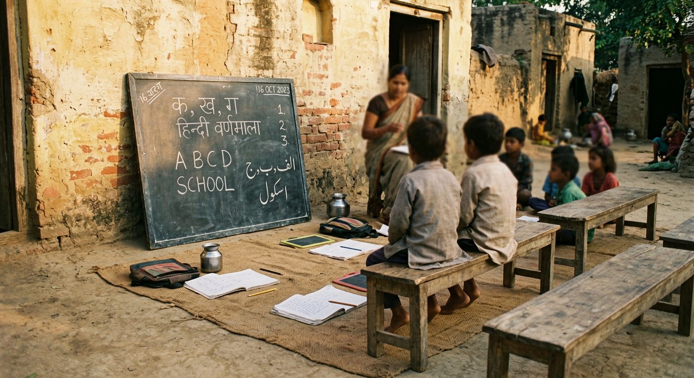
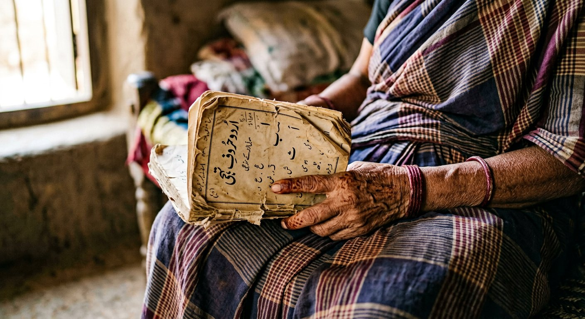
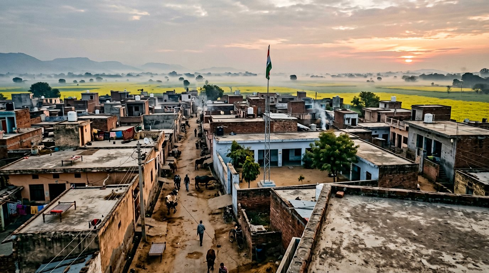

Gallery
Scenes, not poses.
Since 2018 the society does not photograph its beneficiaries — not for donors, not for the press, not for this website. So the gallery shows what welfare actually looks like from the other side of the table: boards, benches, kits, pumps, machines and registers. The people in these frames are staff and volunteers, photographed as colleagues, or villagers at a distance who consented to the frame.





On consent: staff photographs are taken with the subject's say over the frame; villagers at a distance appear only where the frame's owner agreed. Requests to withdraw a frame are honoured within a week, no questions asked.